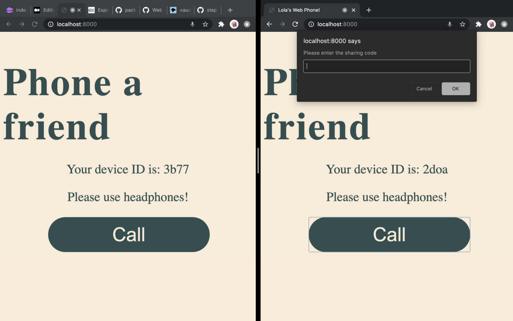

{{WebRTCSidebar}}
{{PreviousMenuNext("Web/API/WebRTC_API/Build_a_phone_with_peerjs/Connect_peers/Create_a_peer_connection", "Web/API/WebRTC_API/Build_a_phone_with_peerjs/Connect_peers/Answer_a_call")}}
Exciting times — now you’re going to give your users the ability to create calls.
First of all, get a reference to the "Call" button that's defined in the HTML, by adding the following to the bottom of script.js:
const callBtn = document.querySelector('.call-btn');
When a caller clicks "Call" you'll want to ask them for the peer ID of the peer they want to call (which we will store in the code variable in getStreamCode()) and then you'll want to create a connection with that code. Add the following below your previous code:
callBtn.addEventListener('click', function(){
getStreamCode();
connectPeers();
const call = peer.call(code, window.localStream); // A
call.on('stream', function(stream) { // B
window.remoteAudio.srcObject = stream; // C
window.remoteAudio.autoplay = true; // D
window.peerStream = stream; //E
showConnectedContent(); //F });
})
})
Let's walk through this code:
const call = peer.call(code, window.localStream): This will create a call with the code and window.localStream we've previously assigned. Note that the localStream will be the user's localStream. So for caller A it'll be their stream & for B, their own stream.
call.on('stream', function(stream) { : peerJS gives us a stream event which you can use on the call that you've created. When a call starts streaming, you need to ensure that the remote stream coming from the call is assigned to the correct HTML elements and window, this is where you'll do that.
The anonymous function takes a MediaStream object as an argument, which you then have to set to your window's HTML like you've done before. Here we get your remote <audio> element and assign the stream passed to the function to the srcObject property.
Ensure the element's autoplay attribute is also set to true.
Ensure that the window's peerStream is set to the stream passed to the function.
Finally you want to show the correct content, so call the showConnectedContent() function you created earlier.
To test this out, open localhost:8000 in two browser windows and click Call inside one of them. You should see this:

If you submit the other peer's ID, the call will be connected!
This is all working so far, but we need to give the other browser the chance to answer or decline the call We'll do that next.
{{PreviousMenuNext("Web/API/WebRTC_API/Build_a_phone_with_peerjs/Connect_peers/Create_a_peer_connection", "Web/API/WebRTC_API/Build_a_phone_with_peerjs/Connect_peers/Answer_a_call")}}